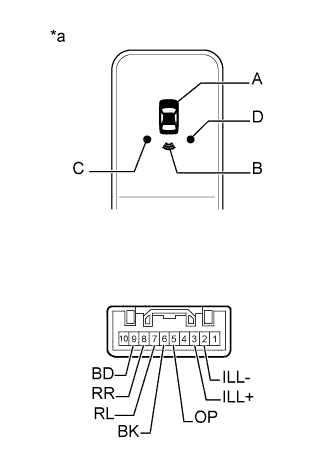

ИНДИКАТОР ПРЕДУПРЕЖДЕНИЯ О НЕДОПУСТИМОЙ ДИСТАНЦИИ > ПРОВЕРКА |
| 1. ПРОВЕРЬТЕ ИНДИКАТОР ПРЕДУПРЕЖДЕНИЯ О НЕДОПУСТИМОЙ ДИСТАНЦИИ В СБОРЕ |
|  |
Проверьте работу индикатора.
для A:
| Условия измерений | Заданные условия |
| Положительный (+) вывод аккумуляторной батареи → контакт 9 (BD) Отрицательный (-) вывод аккумуляторной батареи → контакт 5 (OP) | Светодиод светится |
для B:
| Условия измерений | Заданные условия |
| Положительный (+) вывод аккумуляторной батареи → контакт 9 (BD) Отрицательный (-) вывод аккумуляторной батареи → контакт 6 (BK) | Светодиод светится |
для C:
| Условия измерений | Заданные условия |
| Положительный (+) вывод аккумуляторной батареи → контакт 9 (BD) Отрицательный (-) вывод аккумуляторной батареи → контакт 7 (RL) | Светодиод светится |
для D:
| Условия измерений | Заданные условия |
| Положительный (+) вывод аккумуляторной батареи → контакт 9 (BD) Отрицательный (-) вывод аккумуляторной батареи → контакт 8 (RR) | Светодиод светится |
Проверьте работу подсветки.
| Условия измерений | Заданные условия |
| Положительный (+) вывод аккумуляторной батареи → контакт 3 (ILL+) Отрицательный (-) вывод аккумуляторной батареи → контакт 2 (ILL-) | Светодиод светится |
| *a | Устройство с неподсоединенным жгутом проводов (индикатор предупреждения о недопустимой дистанции) |